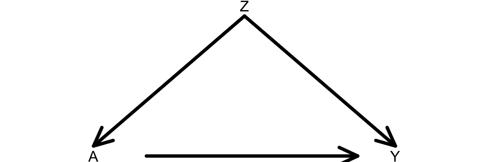
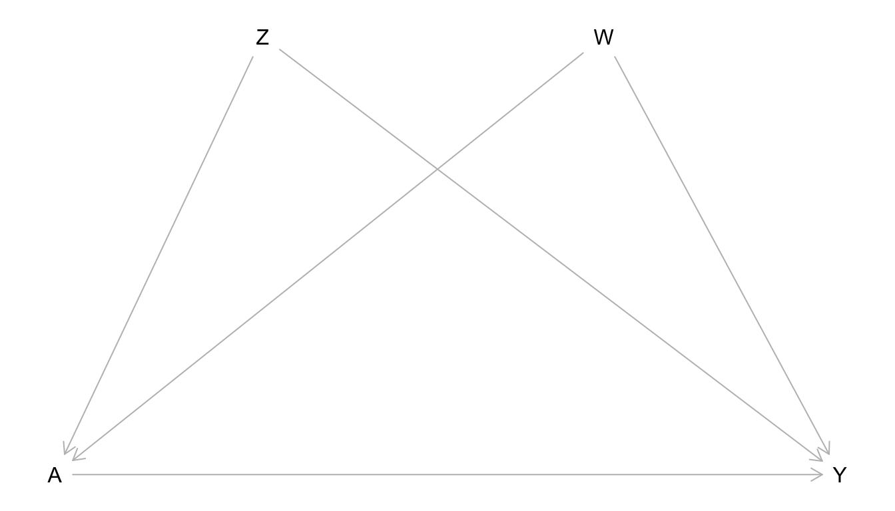

Topic 4 Causal Graphs as Statistical Models
Learning Goals
- Apply the Causal Markov assumption to express the joint distribution of data.
- Simulate data from causal graphs under linear and logistic regression structural equation models.
- Formulate use cases of simulation to understand causal inference concepts
Slides from today are available here.
Simulating data in R
You can download a template RMarkdown file to start from here.
Why simulate?
Simulation is a very powerful tool for understanding statistical ideas. We can simulate (generate) data where we know the true underlying distribution, and we can then see how statistical methods perform on this data. For example:
- Do 95% confidence intervals really contain the true population value in 95% of samples? When is this not true?
- Does regression work to estimate causal effects when we have conditional exchangeability?
Simulation functions in R
R has functions to work with several probability distributions. For example, the following 4 functions work with the normal distribution:
rnorm(): Generate a random number from a normal distributionpnorm(): Tail probability from a normal distributiondnorm(): Get density value from a normal distributionqnorm(): Get a quantile from a normal distribution
There are r, p, d, and q functions for other distributions too (e.g., runif(), rbinom().) We’ll primarily use r functions to generate random numbers.
rbinom():
# 4 different people each flip a fair coin once
rbinom(4, size = 1, prob = 0.5)
# 4 different people flip unfair coins
# First 2 flip a coin with P(Heads) = 0.9
# Second 2 flip a coin with P(Heads) = 0.2
rbinom(4, size = 1, prob = c(0.9, 0.9, 0.2, 0.2))
# Write a command with rbinom() so that the result will definitively be 1,0,1rnorm():
# 5 numbers from a normal distribution with mean 10 and SD 2
rnorm(5, mean = 10, sd = 2)
# 3 numbers from 3 different normal distributions
# Means = 10, 100, 1000. SD = 1
rnorm(3, mean = c(10, 100, 1000), sd = 1)
# Write a command with rnorm() so that the result will definitively be 10,20Simulating data from graphs+SEMs
In this course, we’ll simulate data that come from graphs and their corresponding structural equation models. We’ll step through how to simulate data that come from this causal graph.

Question: Using the Causal Markov Assumption, how can we express the joint distribution of this data?
Consider the structural equation model (SEM) below that is associated with our causal graph:
\[ \begin{align*} Z &\sim N(\mu_Z = 40, \sigma_Z = 5) \\ A &\sim \mathrm{Binomial}(n = 1, p_A) \\ \qquad &\log\left(\frac{p_A}{1-p_A}\right) = -1 + 0.05Z \\ Y &\sim N(\mu_Y, \sigma_Y = 1) \\ \mu_Y &= 30 + 5A + 2Z \end{align*} \]
- \(Z\) is an exogenous variable that follows a normal distribution with mean 40 and standard deviation 5.
- \(A\) is binary (binomial/Bernoulli) with probability of success \(p_A\)
- \(p_A\) depends on \(Z\) via a logistic regression model.
- \(Y\) is quantitative and follows a normal distribution.
- The mean \(\mu_Y\) depends on \(A\) and \(Z\) via a linear regression model.
Complete the code below to simulate data that follow this structural equation model.
set.seed(451) # For reproducibility
# Sample size
n <- 10000
# Simulate the Z variable
Z <- rnorm(?)
# Simulate the A variable
log_odds_A <- -1 + 0.05*Z
odds_A <- exp(log_odds_A)
p_A <- odds_A/(1+odds_A)
A <- rbinom(?)
# Simulate the Y variable
mean_Y <- 30 + ?
noise_Y <- rnorm(n, mean = 0, sd = 1)
Y <- mean_Y + noise_Y
# Store all simulated variables in a dataset called sim_data
sim_data <- data.frame(Z, A, Y)After generating simulated data, it’s best to use plots and summary measures to make sure that marginal distributions and relationships between variables look sensible.
# Explorations to check sensibility of simulated dataExercises
You’ll need to install the dagitty package before getting started.
Exercise 1
Write the joint distribution of the data from the causal graph below using the Causal Markov Assumption.

Simulate data from the graph. You are free to choose your own structural equation model, but let \(Z\), \(W\), and \(Y\) be quantitative. Let \(A\) be binary. Use a sample size of 10,000 for your simulation. Use plots and summary measures to ensure that the simulated data have reasonable properties.
Based on the structural equation model you chose, what would you guess is the average causal effect \(E[Y^{a=1} - Y^{a=0}]\)?
Let’s consider simulating interventions using your SEM. If you were to force all study units to receive a certain value of treatment (either 0 or 1), how do you think the causal graph would change?
Modify your simulation to reflect your thoughts from part d. Incorporate the code below into your simulation.
# Scenario 1: Force all to be treated A_force_1 <- rep(1, n) # Repeat the number 1 n times # Scenario 2: Force all to be treated A_force_0 <- rep(0, n) # Repeat the number 0 n times # The treated potential outcome Y^{a=1} Y1 <- ? # something with A_force_1 # The untreated potential outcome Y^{a=0} Y0 <- ? # something with A_force_0 # Estimate the average causal effect mean(?)Was your intuition from part b close to the ACE that you estimated in the simulation?